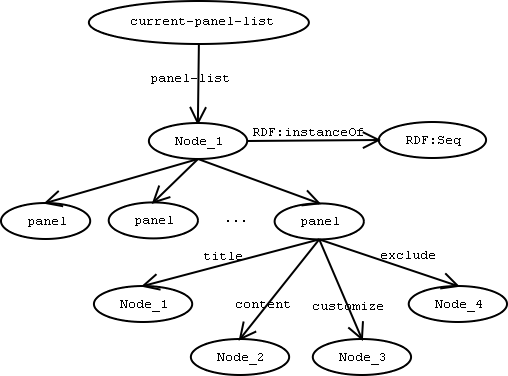
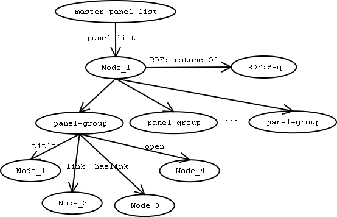
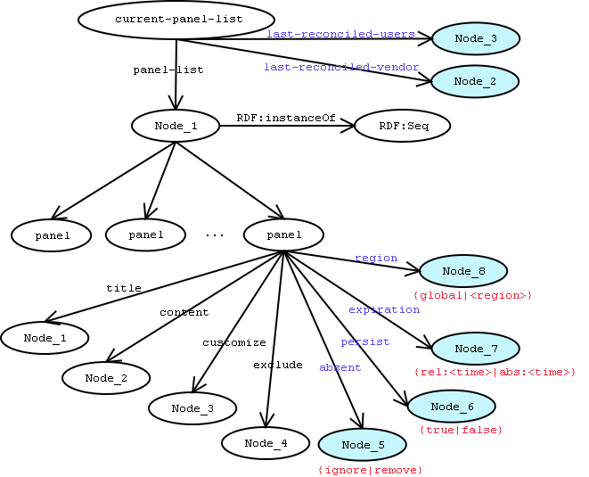
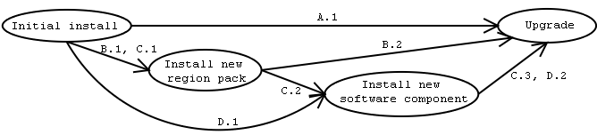

Contents
- Motivation
- Background
- Data
- State
- Proposed solutions by contingent
- For modular installs
- For locale-switching
- For expiration
- For chrome panel installs
- Proposed unified solution
- Install/upgrade use case
- Locale-switching use case
- Backwards compatibility
- Conclusion
- References
I.
Motivation
The sidebar can be used to host web content
as well as applications via local XUL content. Thus, the two primary
parties requiring enhancements to the sidebar include web developers
and application developers (e.g. mozilla). The sidebar panels'
datasource is used to store per-profile lists of user-selected
panels and their state (selected, removed entirely from "tabs" menu
etc.). Currently, there are four enhancement requests having an
impact on or being impacted by the sidebar panels' datasource structure.
These enhancements warrant a change in the datasource structure: a
move from a single, per-profile panels datasource to a categorized,
composite datasource that is composed of a profile-specific datasource
and a global (or set of global) datasource(s). Here we will present
how to achieve the four following goals and we will include design
recommendations:
- Modular panels' datasources (customer: installer for correctness
of certain configurations)
- Dynamically switchable, locale-based collection of sidebar panels
(customer: l10n for useful user experience with a relevant set
of panels based on locale)
- Expiration and intra-release installation of sidebar panels (customer:
web developers/website who wish to push panels for new paying
partners and remove panels of expired deals)
- Install of panels through XPInstall (customer: developers who wish
to push chrome tabs via the web)
II.
Background
First, let's outline the current design
for panel data retrieval and state maintenance.
II.i.
Data
Given the present architecture, at profile-creation
time a default copy of the local panels datasource, panels.rdf,
is copied into the profile directory and used as a base state.
As users add panels from the web or through the customize dialog
(reachable through a menu item in the Tabs flyout) additional panels
are added to the
current-panel-list RDF sequence.
The structure of the current single, per-profile panels' datasource
is diagrammatically represented below.

When the user opens the customize dialog
they are presented with two trees. The left-hand side contains
a list built from the server-hosted
master-panel-list
in the all-panels.rdf datasource file. This datasource lists
panel-groups that contain links to other
panel-lists or like the
master-panel-list they can
contain links to other
panel-groups. The structure
of the
master-panel-list is diagrammatically represented
below.

II.ii.
State
The order of the panels is maintained implicitly
by rearranging the tree items which translates to rearranging
the
current-panel-list RDF sequence persisted in
the profile's
panels.rdf datasource. The
last-selected-panel
is remembered in the localstore.rdf datasource on a per-profile
basis.
III.
Proposed solutions by contingent
III.i.
For modular installs
Modular panels' datasources (per-component basis)
Currently, panels are installed at component-installation
time (e.g., NIM panel installed from NIM.xpi). Yet, the default
panels.rdf datasource that keeps track of user's panel selection
list is global. This means for the above cited example, NIM,
even if a user has only installed Navigator the sidebar panels
list will expect a NIM panel. Obviously there is a run-time failure
(currently ungraceful) since the NIM panel was not installed.
To address this problem two approaches have
been suggested:
(1) Ship
<component>-panels.rdf
datasources for each component being installed. Subsequently
all these datasources will be consulted when building the user's
panel list. Either the
<component>-panels.rdf
action to datasources can be copied into the profile directory
at profile-creation time or they can be consulted as read-only every
time the browser starts. The problem with this approach is the
increase in startup time when performing the "groveling through
all
*-panels.rdf datasources" to build the user's
panel list. In addition, the ability to implicitly remember panel
order as could be done when we had one unified panels list would
be lost.
(2) The other approach would be to still ship a global panels.rdf
per-profile datasource but test for the existence of local panels
and either eliminate them from the list (or more conservatively
don't show a sidebar header for them in the current browser session)
if they are missing. An addition to this approach would be to categorize
panels (via meta-info tags for each panel listing) as "ignore but
don't remove" vs. "remove if absent". Add an arc named
absent
whose terminal node contains the action to take --
ignore
or
remove -- when the panel is local (
chrome:// or
file:/// schemes) and the panel file is missing.
III.ii.
For locale-switching
Dynamically switchable, locale-based collection of sidebar panels
The browser has the ability to switch locales.
However, currently locale-sensitive sidebar panels do not
switch out or in dynamically. There are two high-level approaches
to making the content switch dynamically to match the new locale:
(1) have the panel send the locale as part of the encoded URL
so new content can dynamically be served to the panel
(2) have the sidebar "know" that the locale has been switched
and swap out all old locale-sensitive panels with the new locale's
panels.
The first approach is purely server side
but would require redesigning the content of all current panels
including 3rd-party panels. The second approach would require
the client to:
(1) tag each panel listing with meta-information about the category
it is in: locale-sensitive vs. global content (we would add an arc
to the panel node named
region which could be set to the region
short name or the
global constant)
(2) remember the order of global and locale-sensitive panels
implicitly so that when locale switches occur panel sequence order
is maintained -- hidden panels are simply not displayed
(3) keep panels that have been explicitly reordered by users
intact even upon a locale switch (functionality that would not
be possible with the first approach).
III.iii.
For expiration
Intra-release cycle expiration of sidebar panels
Panel developers would like to expire a
panel either by setting a time horizon on the panel's life
or by explicitly notifying user agents that the panel has expired
(say upon a routine content refresh since a large percentage of clients
of this functionality would be panels with dynamic content).
(1) Setting a time horizon: once again we
could tag each panel-listing with an optional time-horizon
arc that is used either at every browser startup or shutdown
to ask users if they wish to remove panels that have expired.
The time horizon may be a relative or absolute value, i.e., relative
check:
panel-add-date + horizon > now-date then expire
-or- absolute check:
horizon > now-date then expire.
(2) Explicit notification of panel removal: the ability to add
panels already exists. Expiration of panels must involve explicit
user approval before panels are removed. In addition, web content
providers may want to notify users by calling into the sidebar
API. This would require the addition of a
nsISidebar.removePanel(title,
expiration) API that makes for a complete pairing alongside
the current
nsISidebar.addPanel() API. Code
embedded in a sidebar panel would allow the panel to expire itself
immediately using a new enum such as
nsISidebar.EXPIRE_NOW
for the
expiration parameter.
III.iv.
For chrome panel installs
Installation of chrome panels through XPInstall
Panel developers would like to add chrome panels,
i.e. local panels that contain XUL/JS content, either when the
mozilla product ships or after it has been installed. Currently,
only panels that are remote (web content) can be added to an installation
of mozilla because local chrome panels can pose a security risk (since
local content is given access to browser code that could manipulate
local resources including local storage devices and network connections,
e.g., XPCOM's
nsIFile implementation). The
window.sidebar
object exports an API,
addPanel() , that allows web
pages to add panels with user approval. Thus, currently it is not
possible to add a local chrome panel through the sidebar API (known hacks
to install and add chrome panels require users to take multiple steps
and are deemed unacceptable for commercial panel providers).
In order to install panels locally after a user has
installed mozilla, panel providers should have to go through XPInstall.
Going through XPInstall will communicate to the user that
software that can possibly pose a risk if malicious is being downloaded
and installed as opposed to the more or less benign alert that pops
up when users add panels using the current
addPanel() API mentioned
above.
If a user is upgrading, their profile directory already
contains their panel-list. If the upgrade contains new panels
that need to be added to the panel-list this cannot currently be
done. A couple of possible solutions exist for this case:
(1) When the upgrade occurs the XPInstall engine
can expose a new API that explicitly "registers" the new panel
into the current profile's panel-list. This will not work
since multiple profiles may exist on a single machine and only the
upgrader's profile will be updated with the new panel entry in the panel-list.
This brings us to the next couple of proposals.
(2) We could add a <component>-panels.rdf in a central location,
e.g., bin/defaults/profile, and a composite datasource of all the
*-panels.rdf files can be built. The final panel-list can
be a composite datasource of the central "vendor" panels lists' composite
datasource and the user's profile panels.rdf. However, the
building of this composite datasource means a lot of file I/O at
every browser session startup. This brings us to the third and
more refined solution.
(3) We could maintain a new version arc that stores the user-agent
string of the client being used with the current profile. This
string is checked at sidebar-initialization time. In the event
the string doesn't match that means either a user has upgraded, downgraded,
or is using a different flavor of mozilla (e.g., mozilla users now
using their profile with a Netscape 6.1 installation). In such
a case we grovel the "central" location for *-panel.rdf datasources
and then construct the composite datasource that is reconciled with with
the user's panel-list. Therefore, reconciliation only takes places
when the user agent changes. In cases where panels have been installed
using the XPInstall engine after the product has been installed and run,
e.g., region packs that contain region-sensitive panels, an XPInstall
API can be exposed that tells the sidebar to conduct reconciliation on
next startup, i.e., delayed reconciliation, or immediately.
// XXX list problems here: intra-release software updates
and region pack installs
// XXX present new solution of last-reconciled
arc
// XXX present both [lr] flavors: last-reconciled-vendor
and last-reconciled-users
IV.
Proposed unified solution
Having discussed the individual problems and some
recommended solutions for each, let's build one solution that addresses
all issues in a coherent manner. This will require the extension
of the
current-panel-list format to include more
state information. In turn, the sidebar API will need to be
extended for panel developers as well as for intra-application clients
such as the XPInstall engine and locale-switching code. The
solution shall be described in the form of a couple of use cases.
To provide a quick picture of the proposed changes here
is a diagram including the new arcs in the
current-panel-list
(which might prove to be a handy reference in the solution
that will follow).

IV.i.
Install/upgrade use case
The first use case will span the temporal context of
an initial install and a subsequent upgrade keeping in mind multi-profile
installations.

IV.i.a. Initial install
(1) New profile created.
(2) The default panel-list is copied over from bin/default/profile/panels.rdf
to the profile directory. This panel-list must contain entries
for all panels included with the application including chrome panels
like search, history, bookmarks, and also the list of panels from
all region packs shipping with the product (even though some region
packs may not eventually be installed in a custom install: extra entries
shall remain dormant and innocuous as we will see).
(3) The users
current-panel-list shall contain a
last-reconciled
arc that will be the timestamp of the default panels.rdf file.
This will be useful when new region packs and software packages
are installed.
IV.i.b. Install of a new region pack with panels
(1) Now a region pack is installed.
(2) The region pack shall register it's panels into the application's
central bin/default/profile/panels.rdf through an API we shall expose
via XPInstall, say
registerPanel(). We shall provide
the ability to defer registration to next browser startup or to perform
registration immediately. Immediate registration entails updating
the current user's panels.rdf with the new panel entries. Deferred
registration is addressed in the next point: it becomes clear that
deferred registration is the natural default behavior.
(3) On every browser session startup for every profile, the node
value of the
last-reconciled arc in the profile's panels.rdf
is compared against the application's central panels.rdf file timestamp.
If the profile's is older it is reconciled with the application's
central panels.rdf. Reconciliation entails composing a single
datasource from the profile's and the central one (duplicate resolution
is part of the RDF framework). This will take care of the problem
wherein one profile installs a region pack and then others don't see it.
Since all profiles have their own notion of they can each carry
out reconciliation to remain in sync with the central list.
IV.i.c. Install of a new software component with a panel
(1) Now install a software component.
(2) The software component must also register panels it installs
through XPInstall. The behavior for this state is the same as the
case of installing a new region pack.
IV.i.d. Upgrade to a new version of the browser
(1) Now the user updates to a new version altogether.
(2) The panels.rdf file timestamp will have changed.
(3) Next time a profile starts up it will perform it's one time reconciliation
and get new panels. Any chrome panels that are now obsolete
are left as entries in the central panels.rdf but have their
absent
arc nodes set to
remove. Or if they are removed
altogether and their
absent arc nodes were set to
ignore
the panels will simply not be shown if detected to be missing from
the local volume. (This incidentally also solves the problem where
shared mozilla and netscape6 profiles get a broken panel when using mozilla
because of the missing NIM panel.)
IV.ii.
Locale-switching use case
This use case entails users switching from one locale to
another and then back to the original. One can extrapolate
the expected behavior of ,multiple distinct llocale switches(potentially
without returning to the original) from this base use case.
IV.ii.a. Switch from US region to CA region
(1) The user switches from US to CA region.
(2) All the panels with
region arc nodes that are set to
global or the region short name, say
CA, are
shown. There is one exception: if users have shown "regular/extensive"
usage of a panel then it is promoted from the old
US region
to
global. This way it will never be hidden on a locale switch
and the order will remain. What is meant by "regular/extensive"
is yet to be agreed upon: it could mean the user has moved this panel
from its original spot in the current-panel-list. Or it could
mean the user has opened the panel a certain minimum threshold number
of times. Or it could be a combination of the two conditions
mentioned.
IV.ii.b. Switch back from CA region to US region
(1) The user switches back to US from CA.
(2) All the CA panels are hidden and the US ones are shown again
based on a match with the new target region short name (same behavior
as for the initial case from US to CA).
V.
Backwards compatibility
If pre-existing profiles contain panels.rdf datasources
but no
last-reconciled arc we know this is an older format. We
can reconcile the profile's older format panels.rdf with the central
application datasource since we are not eliminating arcs, only adding
new ones which will receive reasonable defaults if missing as and when
they are consulted. Users who then switch back to an older installation
of mozilla will not be broken since the additional arcs from the proposed
format change will be ignored.
VI.
Conclusion
The proposed unified solution should address all four contingents
identified at the outset of this document: locale-switching, missing
local panels, installation of new panels after an initial install, and
expiration of panels controlled by the panel provider. The only
outstanding issue remaining is whether we want to allow panel providers
to be able to set expiration of panels. We will take that up separately
in the future. For now, we will work on implementing said design in
the Mach V time frame after addressing any deficiencies identified during
the review of this proposal.
VII.
References
Rodriguez, Jaime Jr.,
Proposal for Sidebar Merging
, August 23, 2001
Logan, Syd,
Bugzilla 77564: Unable to register into
local-panels.rdf on XPI install
, April 25, 2001
Roberts, Cindy,
Bugzilla 93981: Sidebar Merging
, August 6, 2001